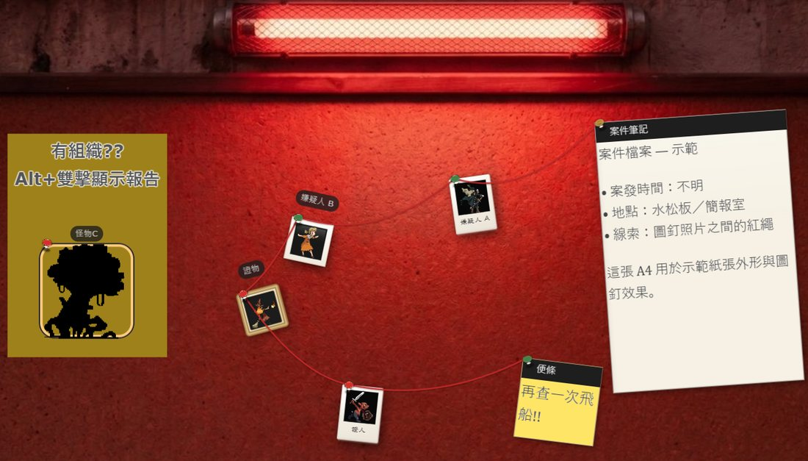
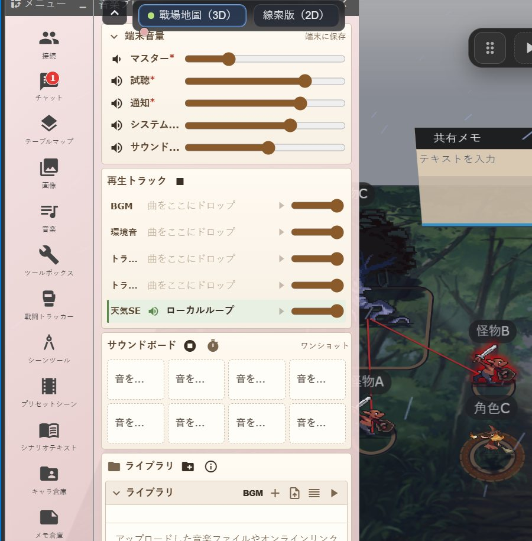
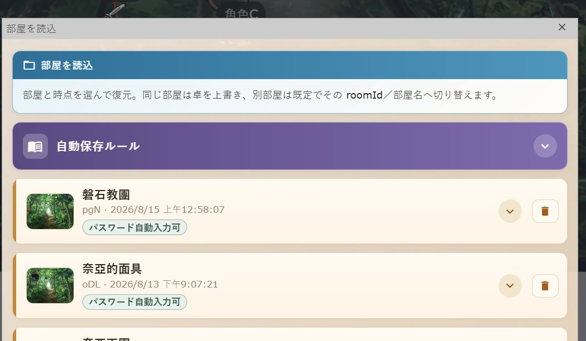

Udonarium 本家
WebRTC 線上桌遊／TRPG 支援工具的原點：房間、桌面、聊天、BCDice、ZIP 存檔。
以 Udonarium／With Fly 為基底的 HKTRPG 改造版：自架 SkyWay backend、多語介面，並加上光照、戰鬥追蹤與鍵盤操控等 VTT 工具。
推薦桌面版 Google Chrome（需 HTTPS）。連線品質仍依賴玩家網路（P2P）。



本家提供核心線上桌面；With Fly 強化表現力；HKTRPG 在其上加上多語與團務向工具，並自架 backend。
WebRTC 線上桌遊／TRPG 支援工具的原點：房間、桌面、聊天、BCDice、ZIP 存檔。
高度、立繪（Stand）、Cut-in、聊天文字顏色、骰子機器人表，以及 SkyWay 2023 連線。
繼承 With Fly，並加入多語、引導教學、多地圖 placement（各圖姿態獨立）、2D 模式、天氣效果音、預設場面（縮圖／保留棋子）、劇本文字、多軌 BGM（每檔 20MB、資料夾曲庫、備份可略過音樂）、選單／讀檔權限、角色權限、GM 踢出、mesh-lock、光照／FoW、戰鬥追蹤、路徑移動、整理後右鍵選單與剪貼簿、物件「匯入／匯出」ZIP、角色「下載為 JSON」（兼容 CCFOLIA）、共用筆記（圖片／影片／PDF・handout・翻面・僅自己可見）、地圖遮罩 Alt＋雙擊動作、地形斜面／霓虹／3D 模型焙地形（STL／OBJ／glTF／FBX）、連線穩定性與邀請連結凍結提示、手機介面、PWA 更新提示與本機資料夾全自動備份；backend 自架於本站。
簡表僅列關鍵差異；細節以各專案 README／實際版本為準。
| 功能 | 本家 | With Fly | HKTRPG |
|---|---|---|---|
| 房間／多桌面／聊天／BCDice／ZIP | 有 | 有 | 有 |
| SkyWay 2023 + 自架／指定 backend | 有 | 有 | 有（本站自架） |
| 高度／Stand／Cut-in／聊天色 | — | 有 | 有 |
| 執行時多語介面（繁／简／EN／日） | — | — | 有 |
| 引導教學／滑過提示 | — | — | 有 |
| GM／User／Guest・選單／讀檔權限與邀請連結 | — | — | 有 |
| 訪客模式（UI 受限） | 基礎／依版本 | 基礎／依版本 | 有（加強） |
| 筆記倉庫（媒體・handout・翻面）／快速擲骰 | — | — | 有 |
| 鍵盤操控／復原重做／路徑移動／Ping | — | — | 有 |
| 光照・FoW・場景工具・戰鬥追蹤 | — | — | 有 |
| 天氣（含效果音）／2D 模式／圖片特效／狀態光環 | — | — | 有 |
| 預設場面／劇本文字／多軌 BGM（每檔 20MB、資料夾曲庫） | — | — | 有 |
| 本機資料夾全自動備份（可略過音樂；Chrome／Edge） | — | — | 有 |
| 多地圖 placement（姿態獨立）／場面預覽・保留棋子／GM 踢出・mesh-lock／PWA | — | — | 有 |
| 物件匯入／匯出 ZIP・角色下載為 JSON（CCFOLIA）・整理後右鍵選單 | — | — | 有 |
| 共用筆記媒體／handout／翻面／僅自己可見・遮罩 Alt＋雙擊動作 | — | — | 有 |
| 地形斜面・六面貼圖・霓虹・3D 模型焙地形（含 bake group） | — | — | 有 |